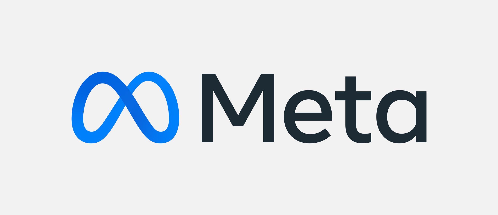
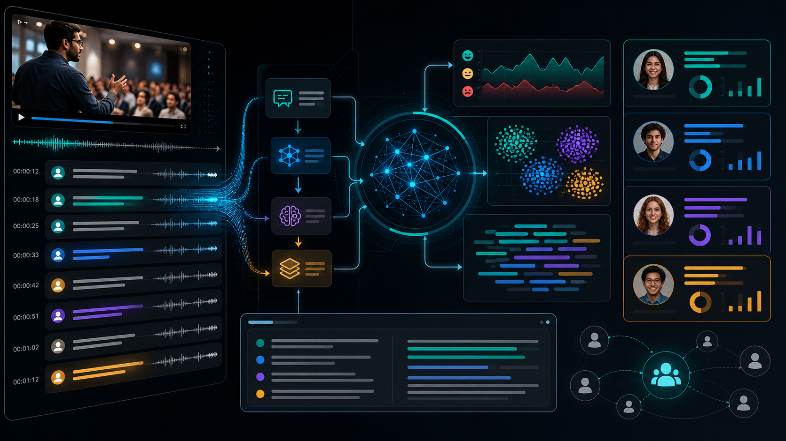
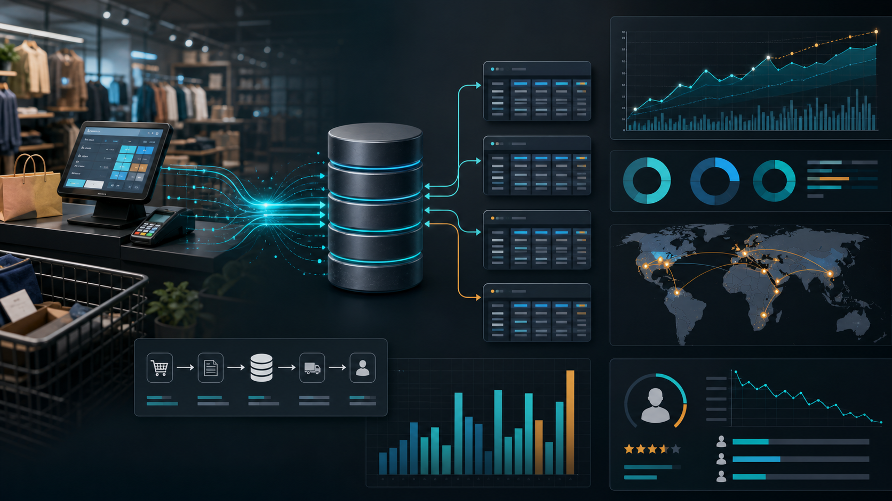

Data Engineering
ETL/ELT pipelines, warehousing, schema design, data aggregation, SQL systems, workflow automation, and trusted data products.
Data Engineering | AI Systems | Analytics at Scale
Data Scientist | Data Engineer | AI Engineer | Machine Learning Engineer
I build data pipelines, statistical and predictive models, machine learning evaluation workflows, AI/NLP solutions, and executive analytics that turn large-scale datasets into decisions. My work connects data engineering foundations with data science, AI engineering, and machine learning systems.
Profile
My brand is simple: I turn messy, high-volume data into dependable systems, measurable insights, and decisions leaders can act on. I bring the engineering discipline to build the foundation, the analytical depth to understand the signal, and the communication skill to make technical work matter to business teams.
ETL/ELT pipelines, warehousing, schema design, data aggregation, SQL systems, workflow automation, and trusted data products.
LLM evaluation, few-shot learning, NLP pipelines, predictive modeling, feature engineering, statistical validation, and model monitoring.
Executive dashboards, KPI reporting, Tableau, Power BI, Qlik Sense, GA4, experimentation, and stakeholder-ready data storytelling.
Experience

Built analytics and ML evaluation workflows across petabyte-scale datasets using Python, SQL, and Llama-based systems, improving model-to-human alignment from 16% to 55%+ and supporting executive decisions around security risk and compliance.
Developed predictive models and automated reporting workflows that improved issue resolution efficiency by 25%, reduced manual reporting by 40%, and increased reporting frequency 4x for product stakeholders.
Analyzed consumer, survey, social, and transaction datasets to improve campaign engagement by 18%, forecasting accuracy by 20%, and sales reporting processing time by 35%.
Automated ETL workflows, built real-time dashboards, ran A/B testing across product lines, and helped reallocate $500K in marketing spend based on quantitative ROI analysis.
Built ingestion pipelines for structured and unstructured data, automated SQL scripts for brand analytics, and developed real-time product sales dashboards that reduced manual intervention by 25% and improved campaign planning speed by 30%.
Interactive AI / NLP / Machine Learning Screening
This portfolio includes an explicit recruiter assistant to show how Pramod thinks about NLP-style intent matching, structured knowledge, and machine-learning communication patterns. It maps recruiter questions to evidence-backed answers about technical depth, education, skills, experience, business impact, teamwork style, and role fit.
Selected Projects
Built a credit risk model with feature engineering, BigQuery analysis, classification algorithms, and statistical validation, reducing false positives by 15% and model runtime by 30%.

Created an NLP pipeline using RoBERTa, BART, and the OpenAI API to mine video transcripts, segment audiences, and generate executive-ready insights for media and advertising teams.

Designed transaction analytics pipelines and dashboards for sales volume, churn, inventory forecasting, and customer spending patterns, improving forecasting accuracy by 20%.
Toolkit
Python, SQL, R, Pandas, NumPy, Scikit-learn, SciPy, Statsmodels, regression, classification, clustering, forecasting.
Google BigQuery, AWS Redshift, SAP HANA, Presto, Hive, GA4, data warehousing, ETL/ELT, schema design, data aggregation.
Tableau, Power BI, Qlik Sense, Excel, KPI reporting, dashboard design, executive storytelling, client-facing presentations.
Financial services, payments, credit risk, fraud detection, consumer analytics, marketing analytics, security analytics.
Education and Research
MS, Business Analytics - San Francisco State University

M.Tech, Computer Science and Engineering - Visvesvaraya Technological University
B.E., Computer Science and Engineering - Visvesvaraya Technological University
Publication: AI-Driven SAP Analytics for Business Intelligence
Certification: Career Essentials in Generative AI, Microsoft
Contact
Based in San Francisco, CA and open to relocate anywhere in the United States. Available for roles where strong data foundations, ML fluency, and business-facing analytics all matter.